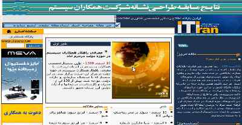
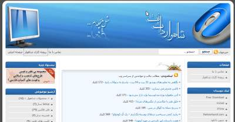
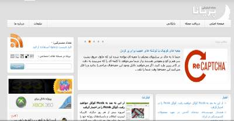
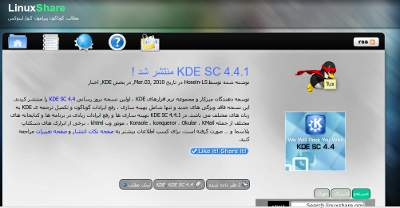
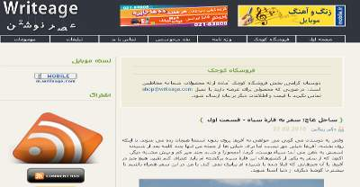
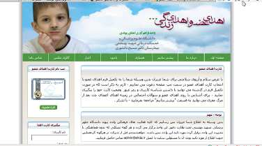

در ایران باستان،سیر نماد اهورا مزدا بوده است…
تاریخ نگارش : ۲۳م اسفند ۱۳۸۸
تعداد نظرات : 18 (شما هم دیدگاه خود را بیان کنید)
سال ۱۹۷۷ دانشمندان ناسا دو فضاپیمای وُیجر ۱ و وُیجر ۲ را به فضا پرتاب کردند تا به اعماق فضا
بروند و دیدی جدید از کهکشانهای دور دست به بشر بدهند.همراه با این دو فضا پیما لوحه ای از جنس طلا
قرار داده شد تا موجودات هوشمند دیگر کهکشانها از وجود ما انسان ها و تمدن ما و تنوع گونه ای زمین
باخبر شوند.اطلاعاتی که در این لوح وجود دارند شامل موارد زیر است :
۱ – صد و پانزده عکس
۲ – صداهای گوناگونی از طبیعت از صدای باران،باد،صدای والها و دیگر حیوانات
۳ – یک پیام خوشامدگویی به ۵۵ زبان از طرف مردم زمین
۴ – ۹۰ دقیقه موسیقی از موسیقی شرق و غرب
۵ – پیامی از طرف جیمی کارتر رئیس جمهور سابق آمریکا
۶ – پیامی از طرف ژنرال سازمان ملل والدهیم
همچنین سلام به زبان فارسی با شعر معروف سعدی یعنی “بنی آدم اعضای یکدیگرند ” دنبال میشود…
آیا تمدن دیگری در فضا وجود دارد ؟ آیا آنها ما را خواهند یافت ؟
اما پیام ما ایرانی ها و صدای ما ایرانی ها در ویجر چنین چیزی است :
درود بر ساکنین ماورا آسمان ها
بنی آدم اعضای یک پیکرند
که در آفرینش ز یک گوهرند
چوعضوی به درد آورد روزگار
دگر عضوها را نماند قرار
دانلود این پیغام که در فضاپیمای ویجر قرار گرفت [۹۴ کیلوبایت]
بیشتر بدانیم :
پیوست : بخوانید “گمشده در فضا” را !
تاریخ نگارش : ۲۳م اسفند ۱۳۸۸
تعداد نظرات : 11 (شما هم دیدگاه خود را بیان کنید)

تاریخ نگارش : ۲۲م اسفند ۱۳۸۸
تعداد نظرات : 20 (شما هم دیدگاه خود را بیان کنید)
متولدین فروردین :
دماغ ! نشانه واضحتان دماغ است وبس ! [حالا نرو توی آیینه نگاه کن بقیه طالع بینی رو بخون وقت زیاده ]
در این هفته با دختر رویاهایتان برخورد خواهید کرد البته حدود نیم ساعت قبل دماغهاتون به هم میرسه بعد
از نیم ساعت هم خودتون.همچنین در این هفته پول زیادی نصیب شما خواهد شد و ماشین آخرین مدل
۲۰۱۰ هم قولنامه خواهید کرد البته از آنجای که متولدین فروردین رویا باف هستن این دو مورد آخر
در خواب اتفاق افتاد ولی به هر حال ما وظیفه داشتیم طالع بینی کنیم.بقیه هفته هم که خواب تشریف
دارید.
متولدین اردیبهشت :
خوشتیپ ترین ، معروفترین ، پول دار ترین انسانها متولد اردیبهشت ماه هستن فقط بیزحمت جواربت
رو هم بشوری بد نیست ها ! در این هفته چند عکاس مطرح شما را برای مدل عکاسی شدن دعوت میکنن
که بهتر است قبول کنید چون این چند عکاس قصد دارند آخرین ترفندهای فوتوشاپ را که در کلاس
۱۴ جلسهای فوتوشاپ یادگرفته اند و شامل پرپشت کردن موها ، برطرف کردن لک و جوشهای چرکی
روی دماغ ، سفید کردن دندان و چند تا چیز دیگه روی شما امتحان کنند که به هر حال شما گزینه
مناسبی هستید.
متولدین خرداد :
متولدین خرداد ماه همگی افرادی با روحیه بالا،پر انرژی ، اهل کار گروهی و در خدمت تیم هستند ،
خب این طی و اینم دستمال و اینم شیشه شور ، شروع میکنید اول کف زمینو خوب طی میکشید
بعدش هم شیشهها رو.اهل کار گروهی هم که هستید مشارکت کنید دیگه. اما در این هفته هنگام
کوهنوردی لای تختهسنگها یک بسته اسکناس پیدا خواهید کرد و هنگام بیرون آوردن اسکناسها
دستتان لای تکه سنگ گیر خواهد کرد بعد به سمت پایین پرت میشوید و دستتان از کتف قطع
میشود.[آقا این سی دی ۲ اره ۶ خط داره اورجینالش رو ندارید ؟] اگر هم اهل کوه رفتن
نیستند باز هم فرقی نداره کتف دستتون باید قطع بشه.در مجموع هفتهای بیخودی خواهید داشت.
متولدین تیر :
متولدین این ماه افرادی جدی ، منظبط ، سخت کوش ، سنگ دل ، بی احساس چطور دلت اومد بچه رو
ول کنی بری .نمی گی بچه خرج داره ؟ ها ؟ همچنین در این هفته چند پیشنهاد کاری مهم دریافت
میکنید که ما توصیه میکنیم پیشنهاد سرایداری یک مجتمع دو طبقه رو قبول کنید چون شرایطش
از بقیه پیشنهادها بهتره و در طالع بینیهای بعدی ما خواهید دید چه تاثیر عمیقی در زندگی شما
خواهد داشت.توصیه ما به شما در این هفته این است :
زندگی مثل بازی گلف میمونه همیشه باید به جلو نگاه کنی و به هدفت.
متولدین مرداد :
متولدین این ماه همگی افرادی با احساس ، رمانتیک ، با کلاس و خوش اخلاق هستند در ضمن برات
قاشق چنگال خریدم توی خونه داشته باشی که دیگه با دست غذا نخوری بعدش در این هفته لطف
کن اون آشغالهای توی خونه رو ببر بزار بیرون شما مسئول پرورش و حفاظت از کرمها و باکتریهای
در حال انقراض نیستی.همچنین از کلانتری اومدن دنبالت بابت اون اخلاق خوشی که گذاشتی پای
چشم دوستت برو بلکه رضایت بگیری.خاک بر سرت کنن بقیه هفته هم که توی کافیشاپا پلاسی.اه !
متولدین شهریور :
افرادی با پیشانی بلند و آینده دار هستند و حتی میگویند مهره مار داشته هر کسی را جذب خود
میکنند در این هفته بخت با شما یار خواهد بود آمیتاپاچان برای ساخت فیلم ملکه مارها ۲ از شما
برای بخش جلوههای ویژه دعوت به عمل میآورد تا در صحنههای خطرناک مارها را به خود
جذب کنید همچنین به جز این اتفاق بی مزه و چندش که در این هفته برای شما می افتد.شما
چند قسمت از کارتون پلنگ صورتی را هم خواهید دید که این مهم ترین اتفاق هفتهتان خواهد بود.
متولدین مهر:
وضع مالی شما در این هفته بد خواهد شد برای همین ما بقیه طالع بینی را رها میکنیم و روش
نجات شما را با توجه به نزدیکی به ایام عید در حفظ شعر زیر و خواندن آن جلوی اعضا فامیل ،
دوست و آشنا ، غریبه و دشمن میدانیم بلکه بعد از ۱۴ روز تعطیلی وضع مالی سر و سامان یابد :
وقت گل صنوبره / عیدی ما یادت نره
متولدین آبان :
هفته قمر در عقربی در پیش رو دارید از یک طرف بچه شما در این هفته به دنیا خواهد آمد که متوجه
میشوید برای ۷ نفر بابا شدهاید یعنی بله هفت قلو صاحب بچه شده اید و این که چیزی نیست اول ماجراست
وایسا تا بهت بگم اگه بدونی شما برای ۳۲ تا دست و پا بابا شدید ؟! بله یکی از بچه ها ۸ تا دست و پا داره.
وایسا کجا ؟ بقیهاش رو گوش کن یکی از بچهها ۲۰ کیلو وزن داره و یکی ۲ گرم.این اتفاق مربوط
به روز شنبه بود،روز یک شنبه این قضیه که آقا شلوارشون دو تا شده و بله دیگه زن دوم دارن لو
میره و کار به طلاق میکشه ، خانوم هم بچه ها رو به شما میسپاره و از حقش برای نگهداری بچهها
میگذره.روز دو شنبه قرمز شدید ؟ صداتون در نمیاد ؟ بچه ها دارن ونگ میزنن ؟ به آخر راه رسیدید ؟
خب از خواب بلند بشید ! تو مگه اصلآ ازدواج کردی که از این طالع بینی ها میخوای ها ؟ پاشو برو سر
درست.
متولدین آذرماه :
در این هفته هر کسی را که دیدید به او یک شاخه گل بدهید به دوستتان پول قرض بدهید، اگر با کسی
قهر هستید آشتی کنید.به عکاسی بروید و یک عکس خوب بیاندازید.قرضهای خود را صاف کنید
موضوع به آخر هفته نمیکشه خدا رحمتتون کنه آدم خوبی بودی حتی به منم شاخه گل دادی همین
روزای آخر دیدمش جوون بود که…
متولدین دی :
افرادی ورزشکار و خوش هیکل هستند و در زمینه بادی بیلدینگ فعالیت میکنن.اوهوم راستی اون موهای
روی بدنت هیچی که داره شدید رشد میکنه.عضلههات هم که رو اومده و کلی رشد کرده فقط ببین
این صورتت چرا داره اینجوری میشه ؟ خیلی آشنا هست ها ؟ شبیه گوریل داری میشی ؟ خب من
که گفتم سه تا از آمپولها رو تزریق کن ورداشتی هر ۸ تا رو با هم زدی ، فک کردی الکیه ؟
پس من باشگاه زدم واسه چی ؟ صبح میایی اینجا میشینی من معاینهات میکنم ۳تا آمپول میزنی
میری یک ماه دیگه بدن رو میاد آه ؟! ببین آه ؟!
متولدین بهمن :
این هفته برای شما اتفاقی نمیافته.خب بی دلیل که نیست.شما خودت حساب کن توی یک هفته که به
قراری میشه ۷ روز هر روز هم ۲۴ ساعت که به قراری میشه ۲ و ۲ چهار و هشت و نه ۱۸ و ده ،
میشه ۱۶۸ ساعت.شما کلآ ۵ ساعت بیدار بودی که اون هم داشتی غر میزدی انتظار داری من چی برات
بگم ؟ ها ؟ بگم این هفته شما ثروت مند میشی ؟ یا اسمت جز دانشمندهای قرن بیرون میاد ؟ ها ؟
ببین فرق طالع بینی مامبوی با بقیه طالع بینی ها توی همین نکته نهفته شده اینکه ما دلخوشونک
نمیدیم به کسی.حقیقت رو رک و راست میزاریم کف دستش.در نهایت توصیه این هفته به شما :
بسکویت بخور / بیدار باش
متولدین اسفند :
کلآ اسفندهای فکر میکنن بهترین ماه سال به دنیا اومدن و باهوش ترین افراد هستن و خیلی حالیشونه
و خیلی خوش تیپن و خیلی پول دارن و کلی به به و چه چه دیگه.خب ما برای اینکه ضد حال
اساسی به کل متولدین ماه های دیگه بزنیم اعلام میکنیم که این حرفا همه صحیح هست و متولدین
اسفند ماه تمام این خصوصیات رو دارن البته فقط یه شرط داره که تو بچگی اون چهره منگول رو
به خودشون نگیرن تا بلکه بتونن تا کلاس پنجم ابتدایی رو بدون رفوزگی جلو بیان و اگه خدا
خواست و خانوادهشون به این نتیجه نرسید که این بچه هیچی ازش در نمیاد و شاگرد مکانیکی چیزی
نداشتنتون میتونید ادعاهای بالا رو بکنید.[خب حالا نمی خواد بری آلبوم عکس بچگیت رو نگاه کنی]
پیوست : شما متولد چه ماهی هستید ؟
تاریخ نگارش : ۱۶م اسفند ۱۳۸۸
تعداد نظرات : 49 (شما هم دیدگاه خود را بیان کنید)
در یکی از تابستانهای چرک و نا امن ِ بنیهاشم،
در اوج ِ بیپولی
یک اسکناس ِ هزار تومانی طی ِ یک کنکاش ِ بیدلیل
لای کتاب باد هر جا میخواهد میوزد ِ برسون پیدا کردم!
انتقال ٍ احساسم در آن لحظه
مثل ِ خوابُ کرال ِ تعبیر نشده در ابدیت گم شد !
کشف ” آ ” برایم از همین جنس بوده است !
در ظللِ ظلماتِ یاسهای فلسفی،
در کنکاش شبهای داغ ِ بیانگیزهگی ،
او را به لبخند منحصر به فردش از لابهلایی ِ لحظهها پیدا کردم !
لبخندی صرفآ برای شخص دوّم !
اوایل عادتم شده بود
که بنشینم به صدای آشنای در زدن ِ مرگ گوش بدهم !
در آن وحشت
بیشترین لبخندهای او اعتمادی توصیف ناپذیر بود!
برعکس ِ همه ی رویاها وُ کابوسها
که به بینهایت میپیوندند ،
لبخند او از بینهایت به من نزدیکُ نزدیکتر میشد !
چیزی شبیه ِ زنگولهی آویز بر کُت ِ نبود ِ سه سالهگیاَم !
و بعد صدای تاپ تاپ قلب ِ کوچک او بود !
قلب ِ کوچکی که بعدها فهمیدم هرگز کودکی نکرده است !
توصیف ِ مالکیتهای حسی هم
همان تعبیر ِ خواب کرُ لالهاست !
….
[کتاب سالهاست که مردهام - حسین پناهی - مجموعه چشم چپ سگ]
از حسین پناهی :
تاریخ نگارش : ۱۶م اسفند ۱۳۸۸
تعداد نظرات : 5 (شما هم دیدگاه خود را بیان کنید)
وبسایتها و وبلاگهای متعددی در زمینه فناوری اطلاعات،دنیای نرمافزار،برنامه نویسی،تکنولوژی
به خط و زبان فارسی مینویسند و چه بسا برخی از آنها سالهای سال سابقه داشته.برخی جوانتر بوده
با ایدهها نو به جلو مینگرند این پست در پی جمعآوری لیستی از این بلاگها و وبسایتهاست تا
شما اگر آنها را نمیشناسید بتوانید از این سرویسها که به صورت رایگان در دسترس هستند بهره ببرید.

وبسایتی باسابقه و خوشنام که اخبار دنیای فناوری اطلاعات را پوشش میدهد.بخشی برای دانلود نرمافزار دارد.
و همچنین در این بخش دنیای بازیها و کنسولها را بررسی میکند.
نارنجی،که طرفداران زیادی هم دارد بر روی گجتها تمرکز دارد.اطلاعات جامع و مفیدی از موبایل
گرفته تا روباتها را در نارنجی پیدا خواهید کرد.

خبر،خبر،خبر ! اخبار آی تی ایران را از این سایت دنبال کنید.تصمیماتی که برای آی تی گرفته میشود
اخبار شرکتها و هزاران خبر دیگر در آی تی ایران.

ITline وبلاگی شسته رفته درباره نرم افزار و سخت افزار که با خواندن هر پست بر اطلاعات شما
افزوده میشود.درنگ نکنید آی تی لاین را همین حالا دنبال کنید…

باز هم یک وبلاگ[وب سایت] باسابقه درباره نرم افزار و سخت افزار.به هر حال شاهوار مثل
هیچ کدام نیست…

با زنگوله از اینترنت لذت ببرید…

پارسیش وبلاگی مرتب و منظم با خبرهای متنوع از دنیای فناوری اطلاعات…
وبنا وبسایتی باسابقه و متفاوت برای معرفی وبسایتهای جدید ایرانی و یا خبری درباره آنها…
وبلاگینا یعنی وبلاگنویسی ! وبلاگی پر از خبرها و راهکارهای دست اول و جذاب…
وبلاگها و وبسایتهای تخصصی کم یافت میشوند.نتورک پروف بر روی شبکه تمرکز دارد و
وبلاگی [وبسایت] حرفهای در این زمینه هست.[خصوصآ من ظاهر مرتب و آراسته این
سایت رو پسندیدم]

وبسایتی متفاوت برای جمعآوری طرحهای بدیع در وبفارسی.منظور طرح و قالب وبسایتها
میباشد.

مجلهای با داشتن چندین نویسنده و پر از خبرهای دنیای فناوری اطلاعات…

خبرهای گوناگون از دنیای لینوکس…
وبسایتی متفاوت که شما را هر هفته به شنیدن آخرین اخبار دنیای نرمافزارهای آزاد خواهد برد…
برنامهنویس،یکی از انجمنهای قدیمی برای برنامهنویسان ایران..
نگهبان،یک وبسایت تخصصی دیگر که صد البته برای همه افرادی که با کامپیوتر سر و کار دارند
مفید و الزامی خواهد بود.در این وبسایت شما از امنیت بیشتر خواهید آموخت…

آی تی تچ با مطالب متنوع درباره فناوری اطلاعات…
باز هم خبر از آی تی ایران…
محلی برای برنامهنویسان،با آموزشهای مختلف در زمینه برنامهنویسی

در عصر نوشتن شما مطالب مختلفی درباره موبایلها و وسایل دیجیتال و مواردی از این دست
خواهید دید…
پیوست: حضرت والا را از طریق فید دنبال کنید !
تاریخ نگارش : ۱۵م اسفند ۱۳۸۸
تعداد نظرات : 22 (شما هم دیدگاه خود را بیان کنید)
بیشتر از تمام مجلات و هر آنچه که میتوان تصور کرد وبلاگهای هستند که مقالههایی [پست] مفید و عالی
نوشتهاند و بی هیچ چشمداشتی در اختیار دیگران گذشته اند و اگر آنها را تا قبل از مرگ نخوانی بیشک
چیزی را از دست دادهای.این پست شامل پستهای از وبلاگهایست که خواندن آن پست توصیه میشود.
۱ – معمای که حل نشد علم بهتر است یا ثروت ؟

اگر از ارسطو میپرسیدند که علم یا ثروت، کدام بهتر است؟ بیتردید زمان زیادی را در باغهای آکادمی
صرف قدم زدن و تفکر میکرد و سرآخر هم جوابی دوپهلو میداد…
۲ – مردی که جهان را نجات داد !

نه! اشتباه نکنید این فرد نه یک سیاستمدار بود و نه سازمان بینالمللی…

ادیسون در طول حیات علمی خویش توانست ۲۵۰۰ امتیاز اختراع را در ایالات متحدهٔ آمریکا
، بریتانیا، فرانسه و آلمان به نام خود ثبت کند…
۴ – گزارش تصویری از پاییز هزار رنگ جنگل ابر
جنگل ابر در ۴۵ کیلومتری شمال شاهرود در مسیر جاده شاهرود به آزاد شهر…
۵ – ناسا و چند عکس از سیر آمادهسازی شاتل

این عکس های دیدنی را ببینید ضرر نکرده اید…
۶ – ۴۰ کار مفید که در کمتر از ۱۰ دقیقه میتوانید انجام دهید

بر اساس تحقیقاتی که در دانشگاه میشیگان صورت گرفته یک زندگی سالم به چهار امر مهم بستگی دارد…
تصور ما از پزشکان، اشخاصی است که در صدد هستند به هر نحو ممکن به بهبود بیماری و سلامت
بیمارنشان کمک کنند…
تاریخ نگارش : ۱۲م اسفند ۱۳۸۸
تعداد نظرات : 8 (شما هم دیدگاه خود را بیان کنید)
زلزله بزرگ شیلی با ۸.۸ ریشتر هفتمین زلزله بزرگ ثبت شده در تاریخ بشر وضعیت چرخش زمین را
تغییر داده و طول روزها را کمتر کرده است.این موضوع را روز دوشنبه دانشمندان ناسا اعلام کردند.
بر طبق نظر اعلام شده ریچارد گراس از دانشمندان ناسا،طول روزها به میزان ۱.۲۶ میلیثانیه
کوتاهتر شده است.
بر طبق همین گفته محور زمین [Figure axis] به میزان ۸ سانتیمتر جابه جا شده است.
[این محور با محوری که از قطب شمال به جنوب وجود دارد متفاوت است و در اصل در فاصله ۱۰ متری
آن محور قرار دارد]
این چنین اتفاقی در گذشته نیز روی داده است به گونهای که در سال ۲۰۰۴ و در اثر زلزله سوماترا که
۹.۱ ریشتر قدرت داشت و باعث ایجاد تسونامی کشنده شد روزها به میزان ۶.۸ میلیثانیه کوتاه شده
و محور زمین به میزان ۷ سانتیمتر جابهجا شد.
طول روز در سیاره زمین به میزان ۲۴ ساعت طول میکشد و این میزان به صورت طبیعی در طول سال
به میزان یک میلیثانیه تغییر میکند.در زمستانها که زمین آهستهتر میگردد این میزان افزایش میابد و
در تابستان کوتاهتر میشود.
با اینکه زلزله شیلی از زلزله سوماترا کوچکتر بود ولی تاثیری بیشتری بر روی سیاره زمین گذاشت
به این خاطر که موقعیت جغرافیایی شیلی به میانه عرض جغرافیایی زمین نزدیک تر بود.
تاریخ نگارش : ۱۱م اسفند ۱۳۸۸
تعداد نظرات : 16 (شما هم دیدگاه خود را بیان کنید)
” اگر زنی سر سه شوهر را خورده باشد (یعنی سه تا شوهرش مرده باشد)، اجازه نمیدهند دوباره ازدواج کند.
او را عقد یک درخت بید میکردند. اگر درخت بید سبز میماند او اجازه داشت دوباره ازدواج کند و اگر نه
نمیتوانست. ” [بخشی از مصاحبه یوسف علیخانی با مجله چلچراغ درباره یکی از رسوم کرمانشاه]

یوسف علیخانی متولد روستای میلک کتابهای نوشته که همگی شایسته تقدیر هستند و به صورت مشخص
نشان از تحقیق و پژوهش او.کتابهای چون ” اژدهاکشان”.

درباره یوسف علیخانی همین کافی که در سال ۱۳۸۲ مجموعه داستانی او به نام ” قدم به خیر مادربزرگ من بود”
که توسط انتشارات افق منتشر شده بود نامزد دریافت کتاب سال شد.و کتاب ” اژدهاکشان ” او که در شهریور
سال ۱۳۸۶ منتشر شد نگاه همه را خیره داستانهای او کرد که در فضای یک روستا میگذشت.
پاراگراف اول پست هم مربوط به کتاب ” عروس بید ” اوست که طبعآ همین خط داستانی مشخص
میکند که با کتابی خواندنی طرف خواهیم بود پس پیشنهاد اینبار کتابهای یوسف علیخانی…
پیوست: وبلاگ شخصی یوسف علیخانی
تاریخ نگارش : ۹م اسفند ۱۳۸۸
تعداد نظرات : 22 (شما هم دیدگاه خود را بیان کنید)
به مدد اینترنت موسساتی که به صورت پیوسته و هوشمندانه به قشرهای مختلف کمک میکنند فرصت
معرفی خودشون رو پیدا کردن و ما میتونیم بر حسب تواناییهای مالی و یا غیرمالی خودمون به این
موسسات کمک کنیم.که البته فکر بدی نیست شما هم در جمعهای خانوادگی و در شهرهای دیگه این
موسسات رو معرفی کنید خصوصآ این موسساتی که میشه براشون پول واریز کرد.
با کمک بنیاد کودک به ادامه تحصیل کودکان کمک میکنید. و از درد و رنج کودکان فقیر و یا بیپدر خواهید
کاست.میشه کودکی رو با پرداخت ماهی ۳۰ هزارتومن کفالتش رو قبول کرد و به بهتر زندگی کردنش
کمک کرد.
محک،موسسه خیریه کمک به کودکان مبتلا به سرطان.برای کمک از داخل و خارج از ایران کافیست
به این صفحه مراجعه کنید.همچنین میتوانید تقویم سال ۱۳۸۹ و یا کارتتبریکهای خودتون رو از
این صفحه سایت محک بخرید.ویا آنلاین به محک کمک کنید.و در نهایت اینکه با ۱۰۰۰ تومن چی کار میشه کرد.
۳ – اهدا

با عضو شدن آنلاین در اهدا شما کارتی دریافت میکنید که بعد از فوت شدن اعضای حیاتی بدنتون
به افراد نیازمند اهدا بشه تا زندگی اونها نجات پیدا کنه.برای عضویت و دریافت کارت از این

کودکان گلهای بهشتاند،نگذاریم پژمرده شوند.دلیل تاسیس این موسسه هر فردی رو تحت تاثیر قرار میده.
و در نهایت برای ارسال کمکهای نقدی و حتی ارزی خود به این صفحه مراجعه کنید.
۵ – انجمن خیریه حمایت از بیماران کلیوی ایران

انجمنی که از سال ۱۳۵۹ مشغول به فعالیت میباشد و با داشتن ۱۳۷ شعبه در سراسر کشور میتواند
پناه بیماران کلیوی باشد.در ضمن این صفحه که هدیه کودکان دیالیزی به ماست را از دست ندهیم
نقاشیهای از طرف این کودکان.
۶ – وحدت : مرکز خیریه معلولین عقبمانده ذهنی

به روزگار سلامت شکستگان دریاب [سعدی].برای کمک به این صفحه مراجعه کنید.
و همچنین در دیگر شهرها :
انجمن خیریه مهرانه – انجمن خیریه حمایت از بیماران سرطانی استان زنجان
انجمن خیریه حمایت از بیماران کلیوی قزوین
انجمن خیریه حمایت از بیماران کبدی ایران
تاریخ نگارش : ۸م اسفند ۱۳۸۸
تعداد نظرات : 15 (شما هم دیدگاه خود را بیان کنید)
- امکانات
- دوستان
- توکای مقدس
- دسته ها
- آکواریومیست
- اجتماعی
- ادبی
- از اعماق وب
- اشتباهات مضحک رایج
- اصول خفن زیستن
- انگلیسی با سرعت نور
- اینجوری بود
- بهلول عاقل
- ترینهای ۲۰۰۹
- تست هوش مامبوجامبو
- تمدن باستانی مصر
- تهوع ها
- خواندنی ها
- داستان کوتاه
- دستهبندی نشده
- دنیای نرم افزار
- ذهن خلاق
- روزانه ها
- سه درجه به راست
- سوالات فلسفی
- سیاست بین الملل
- سینما
- شیوه زندگی
- طراحی ها
- عمومی
- فایرفاکس
- فلسفه مامبوجامبوی
- فناوری
- فیلم جدی
- فیلم های که دیدم
- مخترع جوان
- مرگ های غیر معمول
- موجودات فرازمینی
- موسیقی
- هذیون
- پادکست
- پاسخ به خوانندگان
- پزشکی
- پیاز داغ
- کاراکتر
- کشکول
- گفتگوهای درپیتی